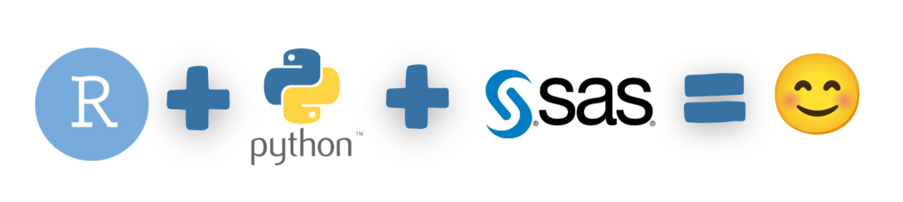
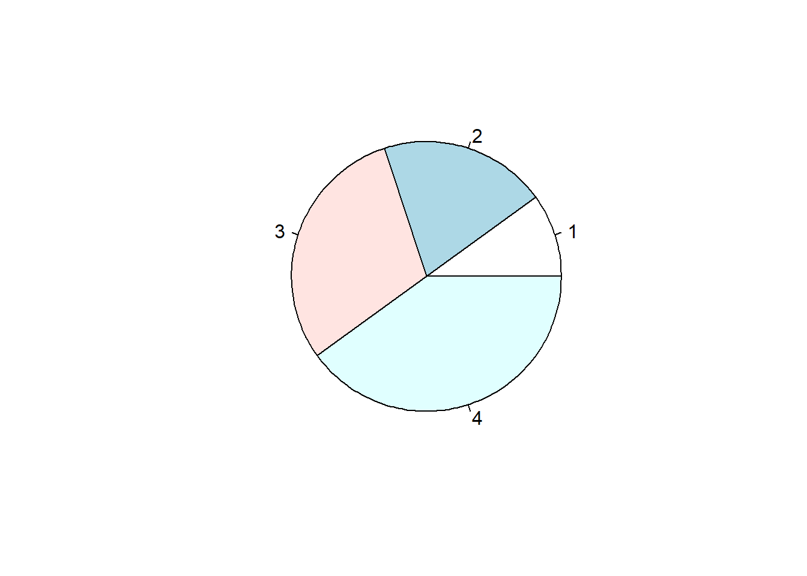

my_function <- function() { # create a function with the name my_function
print("Hello World!")
}
my_functionfunction() { # create a function with the name my_function
print("Hello World!")
}Ciao! This is Kemal speaking. I am working in Telecom Italia Sparkle as commercial manager. I am responsible from account management and business development activities. Our product portfolio consists telecommunication and datacenter services. Steam, electricity, internet and now the data… It is time to utilize all inventions. The world will leverage on computational power and memory blocks… The enabler is big data and machine learning.
I am planning to develop data science skills for possible future job positions or a possible new start-up. I will try to learn not only technical details but also real life applications. I am planning to improve myself about financial data analysis and image processing.

Achieving a seamless workflow between R, Python and SAS from within RStudio
RStudio Global 2022
This session of the conference was hold by Melissa Van Bussel. The title of the session is: Achieving a seamless workflow between R, Python and SAS from within RStudio
Melissa mentions about the need of using open source software in corporate entities and government bodies without expliciting personal information. She mentions about how Canadian government is utilizing open source software such as R or Python by keeping personal information strictly confidential.
Strict data is processed under SAS platform and pushed to other platforms by using opensource code prepared by SAS Software. SASPy is an open source Python package that allows Python coders to access SAS data and analytics capabilities.

A function is a block of code which only runs when it is called.
You can pass data, known as parameters, into a function.
A function can return data as a result.
Creating a Function To create a function, use the function() keyword:
my_function <- function() { # create a function with the name my_function
print("Hello World!")
}
my_functionfunction() { # create a function with the name my_function
print("Hello World!")
}Link: W3 Schools
Pie Charts A pie chart is a circular graphical view of data.
Use the pie() function to draw pie charts:
# Create a vector of pies
x <- c(10,20,30,40)
# Display the pie chart
pie(x)
Link: W3 Schools
To find the data type of an object you have to use class() function. The syntax for doing that is you need to pass the object as an argument to the function class() to find the data type of an object.
# A simple R program
# to find data type of an object
# Logical
print(class(TRUE))[1] "logical"# Integer
print(class(3L))[1] "integer"# Numeric
print(class(10.5))[1] "numeric"# Complex
print(class(1+2i))[1] "complex"# Character
print(class("12-04-2020"))[1] "character"Link: Geeksforgeeks